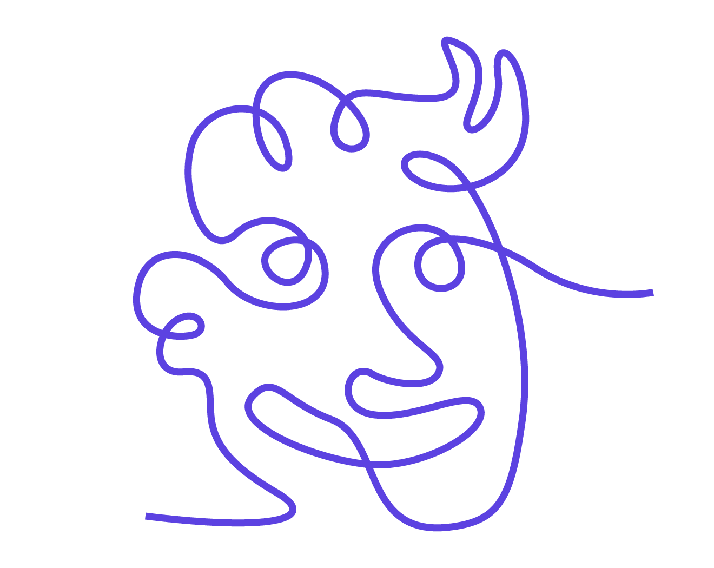
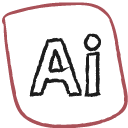
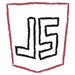
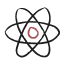
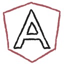
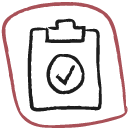
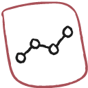

|
Soy Ingeniero Multimedia multi-disciplinario con 5 años de experiencia en el diseño Ux / Ui y el desarrollo creativo, con una sólida base técnica y un fino sentido del equilibrio visual.
Me apasiona crear experiencias claras, útiles y escalables, especialmente en entornos complejos y de alto riesgo, donde las decisiones de diseño influyen directamente en la confianza, la usabilidad y los resultados empresariales.
Así uso mis tecnologías y
conocimiento en mi flujo de trabajo ;)
ESTRATEGIA
¡El resultado
es claridad!
Antes de diseñar cualquier cosa, me aseguro de que estoy resolviendo el problema adecuado. Esta fase puede incluir; descubrimiento del producto y del negocio, análisis del mercado y de la competencia, comprensión de los usuarios y mapeo de los puntos débiles, definición de objetivos, limitaciones y métricas de éxito.
- Research First
- Design Thinking
- User Stories
- User Personas
- Wireframing
DISEÑO
Las decisiones de diseño siempre
están vinculadas a las necesidades
de los usuario y objetivos empresariales.
Una vez que la dirección está clara, paso a la resolución de problemas a través del diseño. Esto incluye: flujos de usuarios y arquitectura de la información, wireframes, diseño de interacción, interfaz de usuario de alta fidelidad y precisión de píxeles, prototipos que simulan el comportamiento real del producto.
- Rive
- Framer
- Figma
-

Adobe Illustrator - Adobe Photoshop
DESARROLLO
Como entiendo el código,
la colaboración es fluida
y práctica.
Trabajo en estrecha colaboración con los equipos de ingeniería para garantizar que los diseños se construyan exactamente según lo previsto. Entregas y documentación claras, control de calidad del diseño durante el desarrollo y soporte front-end para proyectos web cuando es necesario.
- HTML 5
- CSS3
-

Javascript -

React -

Angular
GARANTÍA CALIDAD
El objetivo es la confianza,
tanto para usted como
para sus usuarios.
El diseño no termina con la entrega. Revisiones periódicas y progreso transparente, iteraciones basadas en comentarios, pruebas opcionales con clientes reales y perfeccionamiento basado en datos y conocimientos.
- Comentarios
-

Pruebas - Revisión
-

Progreso - Clientes - Datos
En estas empresas
he aplicado todo mi conocimiento *.*
DISEÑADOR UI
BPT (Business Process and Technologies)
2022 - Presente
Diseñé y apoyé la maquetación UI de un aplicativo para usuarios de transporte masivo en Medellín, optimizando la experiencia de acceso mediante microanimaciones y mensajes visuales.
Participé en investigación con usuarios y análisis de información, proponiendo soluciones mediante wireframes para distintos proyectos.
Desarrollé el diseño UI de la intranet de una aerolínea internacional, creando prototipos y participando en su maquetación con HTML, CSS y JavaScript.
Diseñé el sitio web corporativo de BPT en WordPress, adaptando el template para facilitar la gestión y actualización del contenido.
DISEÑADOR WEB
La imprenta
2018 - 2020
Diseñé diversos sitios web para clientes frecuentes de la litografía utilizando WordPress y Elementor como herramientas de gestión y construcción.
Desarrollé wireframes y prototipos de alta fidelidad, integrando la retroalimentación constante de los usuarios para mejorar la experiencia de uso.
No solo aprendo
en cursos de youtube :D
DISEÑO E INTEGRACIÓN DE MULTIMEDIA
Colegio Juan B. Caballero Medina.
Técnico
PRODUCCIÓN MULTIMEDIA
Servicio Nacional de Aprendizaje (SENA)
Tecnólogo
INGENIERÍA MULTIMEDIA
Universidad Nacional Abierta y a Distancia. (UNAD)
Profesional
CERTIFICADOS
Platzi
Siempre busco
mantenerme informado
Fundamentos de Programación.
Diseño de experiencia Ux.
Ux / Ui Designer.
Javascript para frontend.
Fundamentos de Javascript.
Ux para developers.
Html y Css a profundidad.
Figma para diseño de interfaces.